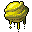

焼酸の胞子嚢 Caustic sporangium
英語版 CrawlWiki の記事「Caustic sporangium」(0.34 向け、2026-07-01 版)の翻訳です。原文の著者は編集履歴をご覧ください。
ジェリーの一覧はジェリー類の一覧を参照。
| 焼酸の胞子嚢 *  | |
|---|---|
| HP | 19-40 |
| HD | 1 |
| XP | 0 |
| 速度 | 15 |
| AC | 0 |
| EV | 10 |
| 意志力 | ∞ |
| 攻撃1 | 1(打撃: 通常)
|
| 耐性 | rPois+ rAcid+++ |
| 弱点 | なし |
| 生息地 | 陸上 |
| 知能 | 無知性 |
| 使用 | 何も使わない |
| 分類 | 生物 |
| 体格 | 小さい |
| 種類 | 焼酸の胞子嚢、焼酸の胞子嚢 |
| フラグ | 飛行 経験値なし 付随的なモンスター |

| 粘菌の胞子を詰めた風船のような袋で、新たな棲み処を探す旅の間、胞子を養うための栄養液に浸されている。近くにいる冒険者にとって大いに不運なことに、この栄養液は強力な酸でもある。 |
基本情報
這い寄る変形体が作り出す、ふわふわと漂う爆発するモンスター。 7x7 の範囲に 3d20 の酸のダメージを与えて爆発し、触れた壁に生まれたての変形体を生み出す(ただし、新しい変形体がほかの変形体の隣にできることはない)。
小技
- 範囲攻撃は、数が増えるのを抑えながら大もとにダメージを与え続けるのに特に役立つ。ファイアボールや点火のような呪文が活躍する場面だ。
- 焼酸の胞子嚢は一瞬で飛んでくるわけではない。あなたが下がるあいだ、召喚したモンスターに爆風を受け止めてもらうとよい。